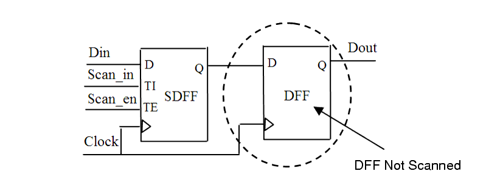

| Description | This rule fires when Leda detects flip-flops in the design that are not scan enabled. Scan enabling all flip-flops improves fault coverage in design for test (DFT) and automatic test pattern generation (ATPG). |
| Policy | DESIGN |
| Ruleset | DFT |
| Language | VHDL/Verilog |
| Type | Hardware |
| Severity | Error |
This is an example of invalid Verilog code, followed by a circuit diagram that illustrates the problem:
module ntl_dft03_top( Clock, Reset, Scan_in, Scan_en, Din, Dout); input Clock, Reset, Scan_in, Scan_en, Din; output Dout; reg Dout, Dout_temp; //SDFF - Scan flip-flop SDFF U0 (.D(Din), .CP(Clock), .TI(Scan_in), .TE(Scan_en), .Q(Dout_temp) ); DFF U1 (.D(Dout_temp), .CP(Clock), .Q(Dout) ); // NTL_DFT03 fires -- flip-flop without scan logic (DFF) endmodule